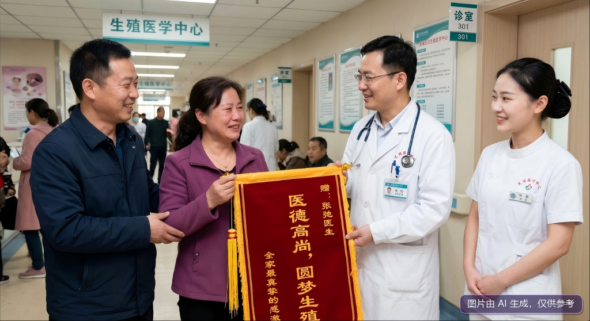

锦旗传谢意：无限生物科技有限公司助力中年夫妇圆“父母梦”
【来源：A城日报】
本报讯（记者 孙建平）

近日，无限生物科技有限公司办公区内暖意融融。一对步入中年的夫妇将一面写有“医德高尚，圆梦生殖”的锦旗亲手交到张弛医生手中，以此表达全家最真挚的感激。
据了解，该夫妇多年求子之路坎坷，面对高龄生育的重重挑战曾几近放弃。张弛医生及其医疗团队针对其身体状况，精准制定了辅助生殖技术方案。经过严谨的治疗与细致的心理疏导，两人近期终获圆满，成功晋升为新手父母。
【来源：A城日报】
本报讯（记者 孙建平）

近日，无限生物科技有限公司办公区内暖意融融。一对步入中年的夫妇将一面写有“医德高尚，圆梦生殖”的锦旗亲手交到张弛医生手中，以此表达全家最真挚的感激。
据了解，该夫妇多年求子之路坎坷，面对高龄生育的重重挑战曾几近放弃。张弛医生及其医疗团队针对其身体状况，精准制定了辅助生殖技术方案。经过严谨的治疗与细致的心理疏导，两人近期终获圆满，成功晋升为新手父母。